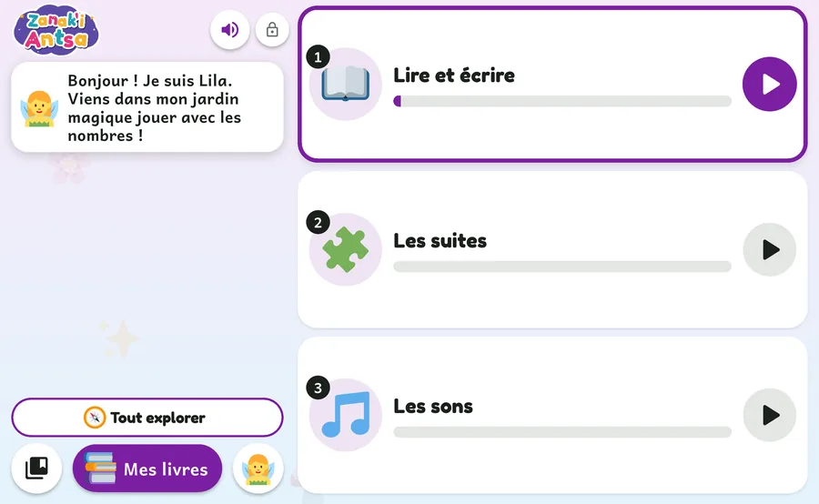
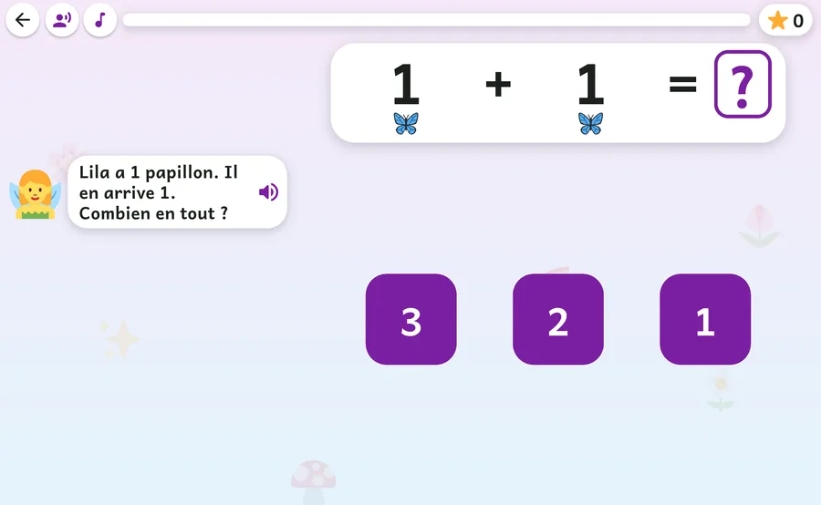
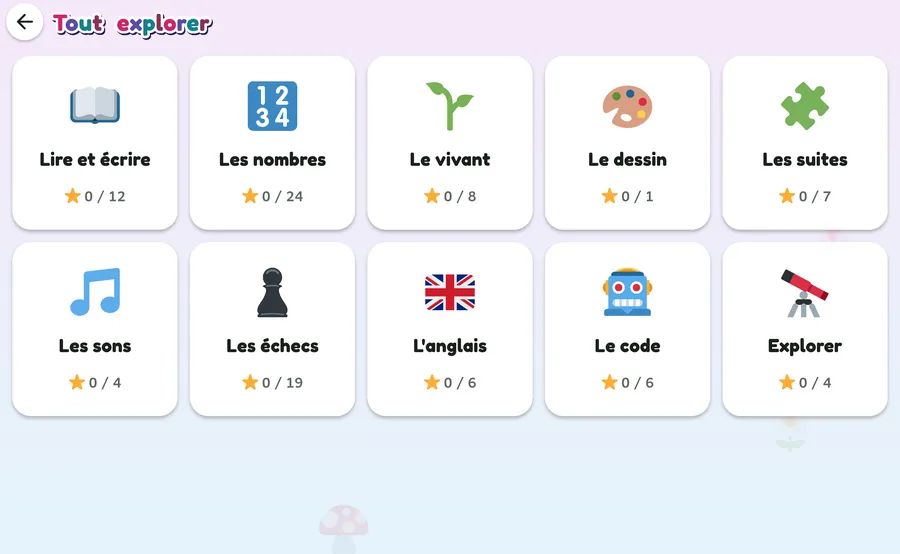
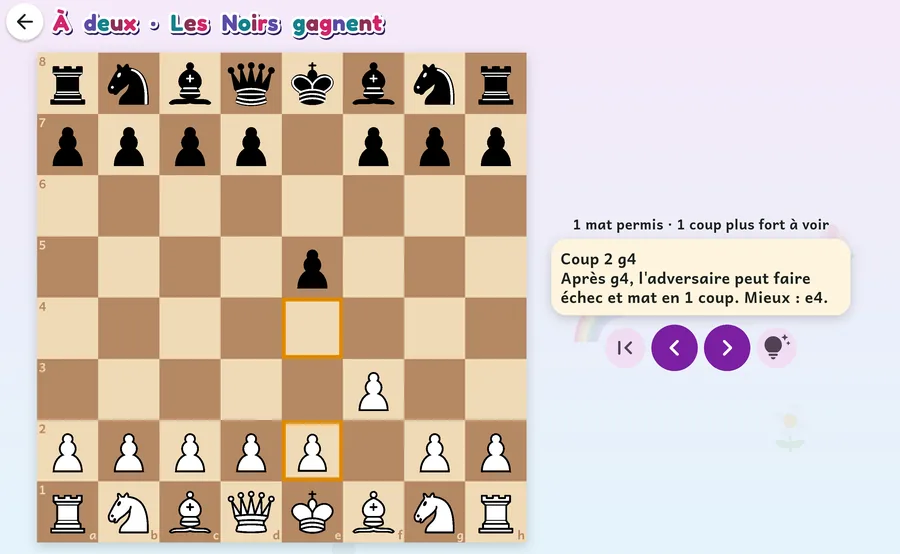

Apprendre seul,un peu chaque jour.
Zanak'i Antsa est une application pour les enfants de 5 à 10 ans. Elle propose des activités courtes, en français : compter, lire, écrire, découvrir le vivant, programmer un robot, jouer aux échecs.
Elle fonctionne hors ligne, sans compte et sans publicité. Elle est gratuite.
Version {{VERSION}}, {{TAILLE}}. Pour Android 7 ou plus récent.

Une question à la fois, écrite et dite
Chaque question s'affiche en toutes lettres et se dit à voix haute. L'enfant qui ne sait pas encore lire peut écouter ; celui qui préfère le silence coupe la voix, et tout reste écrit.
La journée tient en trois activités qui changent d'un jour à l'autre, avec une pause entre deux. Le parent règle le temps de jeu, de 30 minutes à 1 h 30. Quand c'est fini, l'application dit « À demain ».
Le fond sonore est doux, il baisse quand la voix parle, et on peut le couper d'un geste.

Dix domaines, 91 compétences
Du comptage jusqu'à mille aux leçons d'échecs. Beaucoup de compétences commencent par un exemple résolu sous les yeux de l'enfant, puis viennent les questions et les révisions.

 Lire et écrire12 compétences
Lire et écrire12 compétencesSyllabes, lettres capitales et cursives, tracé des lettres au doigt avec le bon sens du geste.
- Les nombres24 compétences
Dénombrer, composer, additionner, soustraire, tables, partage, heure, opérations posées chiffre par chiffre.
- Le vivant8 compétences
Les êtres vivants, leurs besoins, leur corps, leurs milieux de vie.
 Le dessin1 compétence
Le dessin1 compétenceDessiner un sujet précis. L'application regarde si elle le reconnaît et dit ce qu'il manque.
- Les suites7 compétences
Suites d'images et de nombres : de 1 en 1, de 2 en 2, de 10 en 10, à rebours.
- Les sons4 compétences
Écouter, comparer, reconnaître.
- Les échecs19 compétences
Les leçons pas à pas, puis de vraies parties contre le robot ou à deux.
- L'anglais6 compétences
Couleurs, nombres, animaux, le corps : écouter le mot et toucher l'image.
 Le code6 compétences
Le code6 compétencesProgrammer un robot avec des flèches, puis des blocs : boucles, conditions, compteur.
- Explorer4 compétences
Le système solaire, le corps humain et les solides, en 3D.
Se tromper n'est jamais puni
Pas de buzzer, pas de vie perdue, pas de mot « faux ». Une erreur est une information. Dans de nombreux exercices, l'application dit ce que l'enfant a choisi et explique pourquoi ce n'est pas la bonne réponse. L'aide monte d'un cran à chaque essai.
- Un indiceUne phrase qui remet sur la voie, sans donner la réponse.
- Un exemple voisinLa même idée sur un cas plus simple, montré à l'écran.
- La réponse montrée, ou un dernier indiceAprès le troisième essai : la démonstration pour les moins de 6 ans, un indice de plus à partir de 6 ans.
Une compétence est acquise à 4 bonnes réponses sur les 5 dernières. Les compétences acquises reviennent ensuite en révision, un peu plus tard à chaque fois.
Les échecs, du cavalier à la revue d'une partie
Des leçons courtes montrent comment bouge chaque pièce, puis le roque, la promotion, la prise en passant et les premières tactiques. Ensuite l'enfant joue : contre le robot de l'application, contre Maia (un robot qui joue comme des joueurs humains de niveau 1100, 1500 ou 1900) ou à deux sur la même tablette.
Chaque partie est gardée. En la revoyant coup par coup, l'enfant lit des conseils : un mat manqué, une pièce laissée en prise, un coup plus fort. Le moteur Stockfish travaille sur la tablette, sans internet.

Pour les parents
Il n'y a pas
- de compte à créer
- de publicité
- d'achat dans l'application
- de minuteur qui presse l'enfant
- de vie à perdre ni de punition
- de classement entre enfants
Vous réglez
- l'âge et le monde de chaque enfant
- le temps de jeu par jour
- la voix de la tablette, avec un essai
- les mises à jour, quand vous le décidez
Vous voyez
- le rapport des 7 derniers jours
- les erreurs qui reviennent
- les activités de la semaine
L'espace parent se cache derrière un petit calcul, qu'un enfant de 5 ou 6 ans ne sait pas encore faire. Plusieurs enfants peuvent jouer sur la même tablette : chacun a son profil, son monde et sa progression.
À savoir
Le journal d'activité reste sur l'appareil. Ni image, ni voix, ni dessin ne quitte la tablette. Une exception : la reconnaissance des tracés utilise ML Kit, de Google, qui envoie des statistiques techniques d'usage, jamais les tracés. Un téléchargement unique, lancé depuis l'espace parent, apporte ses modèles ; le reste fonctionne sans internet.
Les voix viennent de la synthèse vocale de la tablette ; des voix enregistrées sont prévues. L'application est encore en cours d'essai : l'essai avec un groupe d'enfants n'a pas encore eu lieu.
Télécharger Zanak'i Antsa
- Version
- {{VERSION}}, publiée le {{VERSION_DATE}}
- Taille
- {{TAILLE}}
- Android
- 7.0 ou plus récent
- Processeur
- 64 bits (arm64), celui de la plupart des tablettes et téléphones récents
- Empreinte SHA-256
- {{SHA256}}
Notes de cette version et autres fichiers, sur GitHub.
Installer en quatre gestes
- Télécharger le fichier avec le bouton ci-contre, depuis la tablette ou le téléphone.
- Ouvrir le fichier. Android demande d'autoriser ce navigateur à installer des applications : acceptez pour cette fois seulement.
- Ouvrir Zanak'i Antsa, toucher l'espace parent (le cadenas), résoudre le petit calcul, puis choisir l'âge et le monde de l'enfant.
- Mettre à jour plus tard depuis l'espace parent, avec « Rechercher une mise à jour ».
L'application n'est pas sur Google Play. Le fichier est signé par son auteur, et l'application vérifie cette signature avant d'installer une mise à jour.
Nouvelles
De l'application
Chaque version, avec ce qu'elle apporte.
{{VERSIONS}}Ce que dit la recherche
Des notes de lecture sur ce qui guide les choix de l'application, avec leurs limites.
{{NOTES}}S'abonner aux nouvelles avec un lecteur de flux (Atom).